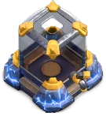
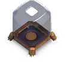
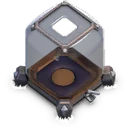
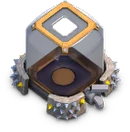
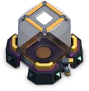
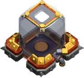
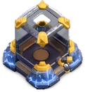

Dark Elixir Storage
Updated: 26 August 2026 · By the Goblins Farm team
The Dark Elixir Storage is a Home Village building with 13 levels, first available at Town Hall 7.

Reference page. This entry carries verified level data but does not yet have a written strategy section. Behaviour and counter notes are being added across the wiki; the tables below are as complete as the source snapshot allows.
- Levels
- 13
- Size
- 3x3
- Category
- Resource Building
- Unlocked at
- Town Hall 7
- Most you can place
- 1
 How it looks at each level
How it looks at each level






Stats by level
| Level | Hitpoints | DPS or effect | Build cost | Build time | Town Hall |
|---|---|---|---|---|---|
| 1 | 2,000 | Holds 10,000 dark elixir | 250,000 Elixir | 8 h | 7 |
| 2 | 2,200 | Holds 17,500 dark elixir | 500,000 Elixir | 16 h | 7 |
| 3 | 2,400 | Holds 40,000 dark elixir | 1,000,000 Elixir | 1 d | 8 |
| 4 | 2,600 | Holds 75,000 dark elixir | 1,500,000 Elixir | 1 d 12 h | 8 |
| 5 | 2,900 | Holds 140,000 dark elixir | 2,000,000 Elixir | 1 d 16 h | 9 |
| 6 | 3,200 | Holds 180,000 dark elixir | 2,400,000 Elixir | 2 d | 9 |
| 7 | 3,500 | Holds 220,000 dark elixir | 3,800,000 Elixir | 3 d | 12 |
| 8 | 3,800 | Holds 280,000 dark elixir | 5,400,000 Elixir | 3 d 12 h | 13 |
| 9 | 4,100 | Holds 330,000 dark elixir | 6,600,000 Elixir | 4 d | 14 |
| 10 | 4,300 | Holds 360,000 dark elixir | 8,000,000 Elixir | 4 d 12 h | 15 |
| 11 | 4,500 | Holds 390,000 dark elixir | 10,000,000 Elixir | 5 d | 16 |
| 12 | 4,700 | Holds 420,000 dark elixir | 16,000,000 Elixir | 7 d | 17 |
| 13 | 4,800 | Holds 450,000 dark elixir | 25,000,000 Elixir | 13 d | 18 |
| Town Hall | Available |
|---|---|
| TH7 | 1 |
| TH8 | 1 |
| TH9 | 1 |
| TH10 | 1 |
| TH11 | 1 |
| TH12 | 1 |
| TH13 | 1 |
| TH14 | 1 |
| TH15 | 1 |
| TH16 | 1 |
| TH17 | 1 |
| TH18 | 1 |

Where these numbers come from. Read from Clash of Clans' own game files, client build 18.400.21. They are exact for that build and do not reflect anything released after it, so verify in game before committing an upgrade.
Game values are read from Supercell's own game files, reproduced as fan content under Supercell's Fan Content Policy. Goblins Farm is not affiliated with, endorsed, sponsored, or specifically approved by Supercell, and Supercell is not responsible for it.
 Keep reading
Keep reading
Goblins Farm is not affiliated with, endorsed by, sponsored by, or specifically approved by Supercell. Clash of Clans is a trademark of Supercell Oy. This material is unofficial fan content produced under Supercell's Fan Content Policy. Game values change with every update; always verify in-game before committing an upgrade.